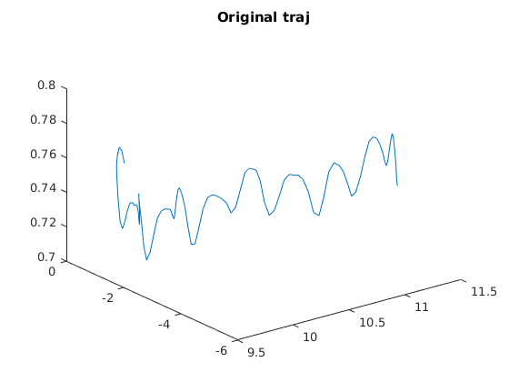
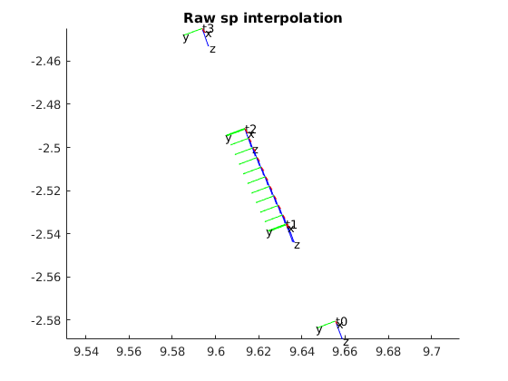
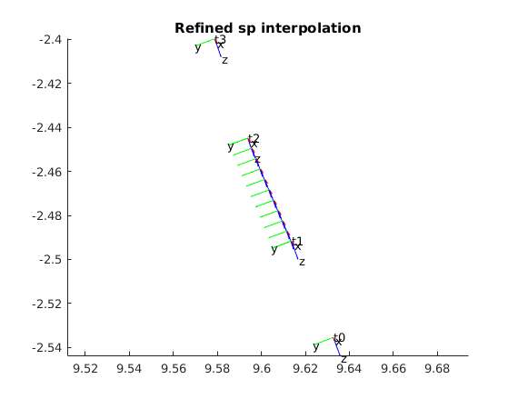
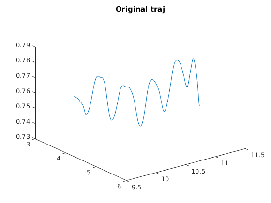
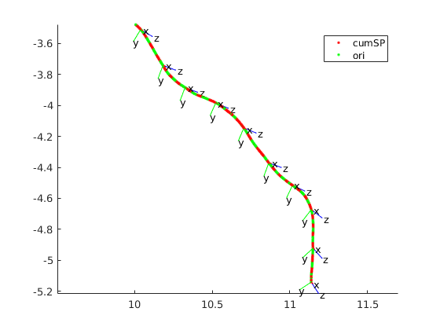

Contents
Demo of the cummulative spline
clear all close all current_path = pwd; try AddLibPath catch addpath('/home/aslab/Desktop/MatlabProjectFiles') AddLibPath end
ans =
1
0
0
0
Load sample trajectory data
if 0% road from raw file base_dir='/media/aslab/BD/datasets/CTSLAM_Data/tri_office_long_icra_final' fprefix ='ICRA_office_long_zeb_2017-09-12-00-43-28_0'; fbase ='/media/aslab/BD/datasets/CTSLAM_Data/'; fname =[fbase fprefix '.bag']; % read GT trajectory filename=[base_dir '/results_traj.txt'] %filename=[base_dir '/results_traj_local.txt'] [time,Lt,Lq] =importtraj(filename); t0 = time(1) sampling_time = time(2)-t0; time = time-t0; save cumSP_sample_data Lt Lq time else % road from presaved file load cumSP_sample_data end time_Ori = time; Lt_Ori = Lt; Lq_Ori = Lq;
Demo 1 direct pose interpolation.
this example uses the given input traj as it is. so, this does not go through the given poses. it needs the fine tuning in the next demo. given "k" this demo will show the interpolations between k to k+1
% subsample it startInd = 10000 if 1 % original trajectory is 100 hz % subsample_ind = 100 % 1 hz traj % num_sample=10000 % 100sec subsample_ind = 10 % 10 hz traj num_sample=1000 % 10sec % subsample the control point and trajectory time_cp = time(startInd:subsample_ind:startInd+num_sample)'; Lt_cp = Lt(startInd:subsample_ind:startInd+num_sample,:)'; Lq_cp = Lq(startInd:subsample_ind:startInd+num_sample,:)'; time = time(startInd:subsample_ind:startInd+num_sample)'; Lt = Lt(startInd:subsample_ind:startInd+num_sample,:)'; Lq = Lq(startInd:subsample_ind:startInd+num_sample,:)'; steptime=mean(diff(time_cp)); figure plot3(Lt_cp(1,:),Lt_cp(2,:),Lt_cp(3,:)) title('Original traj') T=trans_quat2T([Lt_cp;Lq_cp]); xi=log_se3(T); % calculate the relative motion. not used now. if 0 % diff by trans_quat to T to se3 dtq=diff_pose3d([Lt_cp;Lq_cp]); dT=trans_quat2T(dtq); dxi=log_se3(dT); else % diff by trans_quat to se3 dxi = diff_se3(xi); end % select k and shows the controlpoints k = 72; figure T0=T(:,:,k-1); draw_axis_from_T( T0,'t0',0.01,0.001,0.001) draw_axis_from_T( T(:,:,k),'t1',0.01,0.001,0.001) draw_axis_from_T( T(:,:,k+1),'t2',0.01,0.001,0.001) draw_axis_from_T( T(:,:,k+2),'t3',0.01,0.001,0.001) axis equal % 10 interpolations between poses for j =0:steptime/10:steptime Tk = traj_interpol_cummulativeSpline_se3(T,time_cp, time_cp(k)+j); hold on draw_axis_from_T( Tk,'',0.01,0.001,0); end title('Raw sp interpolation') end
startInd =
10000
subsample_ind =
10
num_sample =
1000
  Demo 2 Optimize the pose to convert it to a spline control point. Resulting trajectory go through the given input poses
if 1 xicp = xi; % spline need -1 and +2 index startind = find(time_cp(2)==time); endind = find(time_cp(end-2)==time); xi = xi(:,startind:endind); time =time(startind:endind); T = exp_se3(xi); % optimization takes long. it can be loaded if 1 load xicp_opt_demo2 else xicp0 = reshape(xicp,[1 length(xicp)*6]); e = get_cummulativeSpline_cp(xicp0,time_cp,xi,time); options = optimset('Algorithm','levenberg-marquardt','TolFun',1e-16,'Display','iter','MaxIter',1); [xicp_opt,FVAL]=fsolve(@(xicp) get_cummulativeSpline_cp(xicp,time_cp,xi,time) ,xicp0,options); xicp_opt-xicp0; e = get_cummulativeSpline_cp(xicp_opt,time_cp,xi,time); save xicp_opt_demo2 xicp_opt end xicp_opt=reshape(xicp_opt,[6 length(xicp_opt)/6]); Tcp=exp_se3(xicp_opt); % repeat the same visualization with the demo1 but with the refined % control points. figure T0=T(:,:,k-1); draw_axis_from_T( T0,'t0',0.01,0.001,0.001) draw_axis_from_T( T(:,:,k),'t1',0.01,0.001,0.001) draw_axis_from_T( T(:,:,k+1),'t2',0.01,0.001,0.001) draw_axis_from_T( T(:,:,k+2),'t3',0.01,0.001,0.001) axis equal for j =0:steptime/10:steptime*1 Tk = traj_interpol_cummulativeSpline_se3(Tcp,time_cp, time(k)+j); hold on draw_axis_from_T( Tk,'',0.01,0.001,0); end title('Refined sp interpolation') end
Demo 3 subsampled control point optimization
Original pose: 500 Subsampled control points: 50 Generally good with the handheld motion but not perfect
if 1 time = time_Ori; Lt = Lt_Ori; Lq = Lq_Ori; % initial control points subsample_ind = 10 num_sample=500 time_cp = time(startInd:subsample_ind:startInd+num_sample)'; Lt_cp = Lt(startInd:subsample_ind:startInd+num_sample,:)'; Lq_cp = Lq(startInd:subsample_ind:startInd+num_sample,:)'; % original pose subsample_ind = 1 num_sample=500 time = time(startInd:subsample_ind:startInd+num_sample)'; Lt = Lt(startInd:subsample_ind:startInd+num_sample,:)'; Lq = Lq(startInd:subsample_ind:startInd+num_sample,:)'; figure plot3(Lt(1,:),Lt(2,:),Lt(3,:)) title('Original traj') T=trans_quat2T([Lt;Lq]); xi=log_se3(T); T_cp=trans_quat2T([Lt_cp;Lq_cp]); xicp=log_se3(T_cp); % spline need -1 and +2 index startind = find(time_cp(2)==time); endind = find(time_cp(end-2)==time); xi = xi(:,startind:endind); time =time(startind:endind); T = exp_se3(xi); % check the initial error xicp0 = reshape(xicp,[1 length(xicp)*6]); e = get_cummulativeSpline_cp(xicp0,time_cp,xi,time); % optimization takes long time if 0 options = optimset('Algorithm','levenberg-marquardt','TolFun',1e-16,'Display','iter','MaxIter',1); [xicp_opt,FVAL]=fsolve(@(xicp) get_cummulativeSpline_cp(xicp,time_cp,xi,time) ,xicp0,options); xicp_opt-xicp0; % just for a comparison e = get_cummulativeSpline_cp(xicp_opt,time_cp,xi,time); save xicp_opt_demo3 xicp_opt else load xicp_opt_demo3 end xicp_opt=reshape(xicp_opt,[6 length(xicp_opt)/6]); Tcp=exp_se3(xicp_opt); % draw trajectory figure for k = startind:endind-startind Tk = traj_interpol_cummulativeSpline_se3(Tcp,time_cp, time(k)); hold on t= Tk(1:3,4); % Spline interpolated a=plot3( t(1),t(2),t(3),'r.'); t= T(1:3,4,k); % Original b=plot3( t(1),t(2),t(3),'g.'); end legend([a b],'cumSP','ori') % draw axis for k = startind:50:endind-startind Tk = traj_interpol_cummulativeSpline_se3(Tcp,time_cp, time(k)); hold on draw_axis_from_T( Tk,'',0.1,0.001,0.001) end axis equal end
subsample_ind =
10
num_sample =
500
subsample_ind =
1
num_sample =
500
 